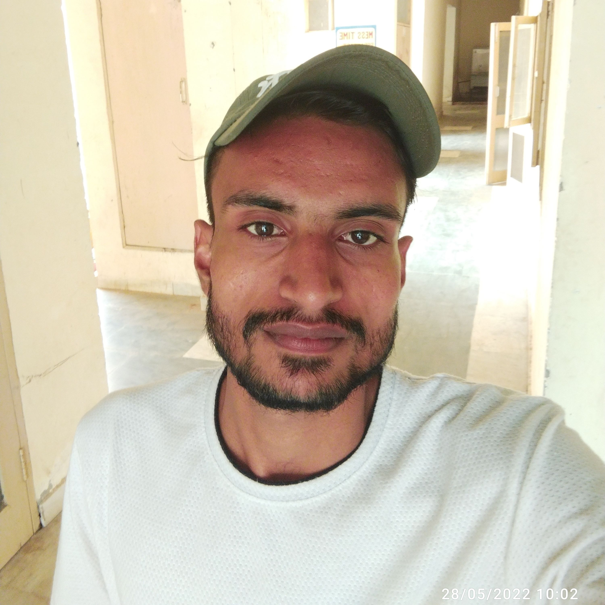

Portfolio Page(My Information)

Gagan Kumar Singh
EDUCATION
- B.Tech:
- Arya College of Engineering, Jaipur - B.Tech, Computer & Science Engineering
Oct 2023 - May 2026
- (Lateral Entry)
- CGPA: 8.30
- Coursework: Data Structures and Algorithms (Java), OOP Concepts (Java), SQL
- Diploma:
- R.J.L.B Govt. Polytechnic, Loharu- Diploma, Computer & Science Engineering
Oct 2021 - May 2023
- (Lateral Entry)
- CGPA: 7.0
- Coursework: Programming(Java) DBMS
WORK EXPERIENCE
- Java Full Stack Developer Student
- JSpiders Training and Developement Center – Bangalore, Karnataka
June 2025 - Present
- Undergoing comprehensive training in Core Java, Advanced Java, SQL, problem-solving, and web
technologies.
- Developed and deployed CRUD-based Java applications using JDBC and MySQL, ensuring modularity
and
maintainability through OOP design principles.
- Tech Stack: Core Java, SQL, JDBC, HTML, CSS
PROJECTS
- Student Management System | Java, JDBC, MySQL
GitHub
- Developed a desktop CRUD application for managing student records using JDBC-MySQL integration.
- Implemented CRUD operations (Create, Read, Update, Delete) with structured query handling and error
management.
- Reduced database access latency by 35% through optimized SQL queries and prepared statements.
SKILLS
- Language: Java, SQL, JavaScript
- Backend & Freameworks: JDBC, J2EE
- Database: Oracle, MySQL
- Concepts: OOP's, Collections Framework, Exception Handling, SDLC
- Soft Skills: Problem Solving, Team Work, Time Management
ACHIEVEMENTS
-
I got 4times scholoraship in my Diploma College.
-
In my captaincy, My team won the Inter College Tournament Cup.